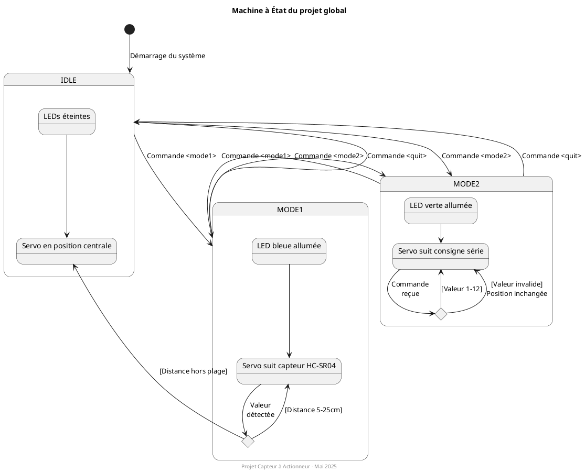
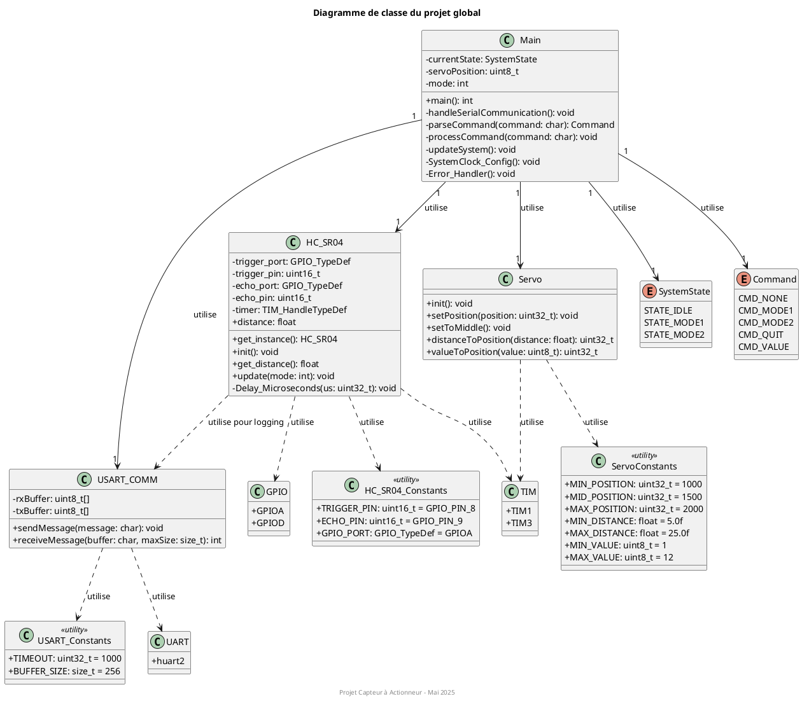
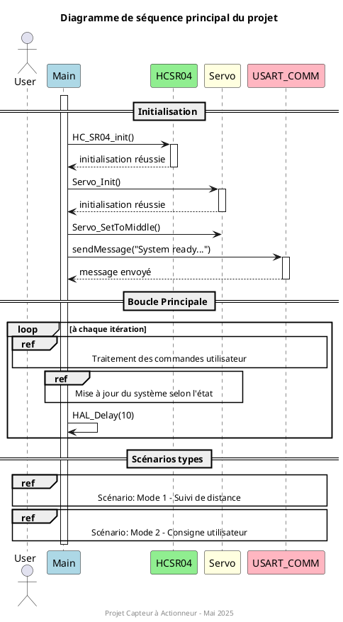
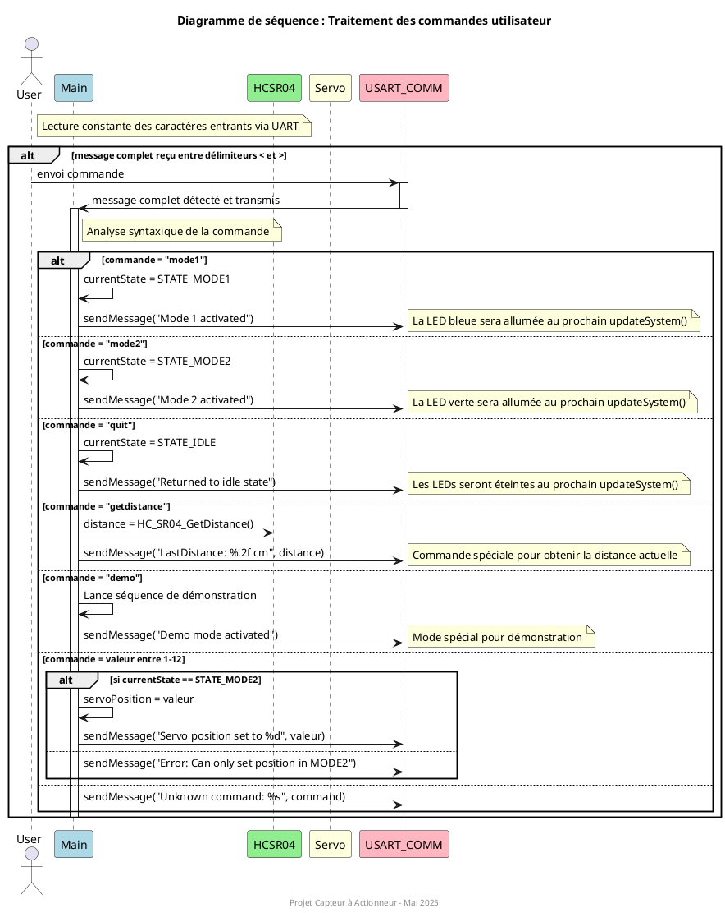
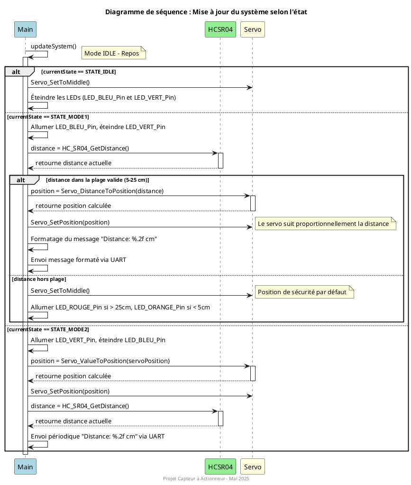
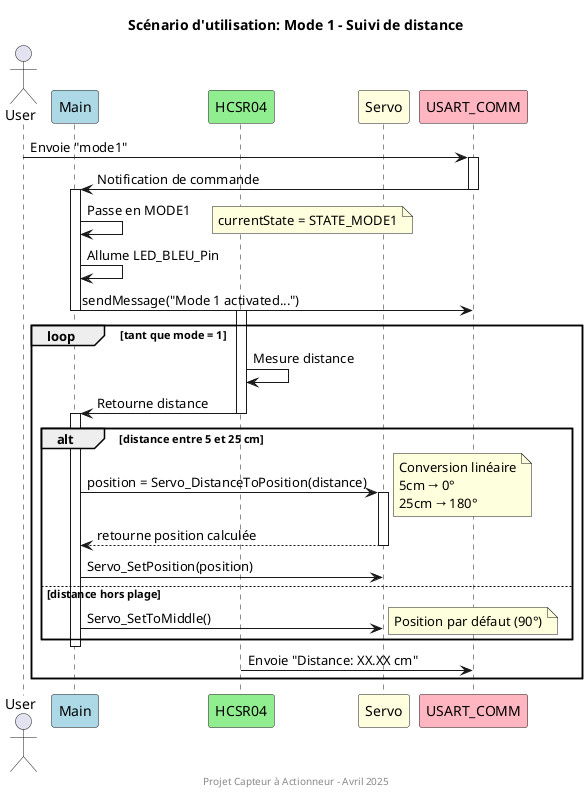
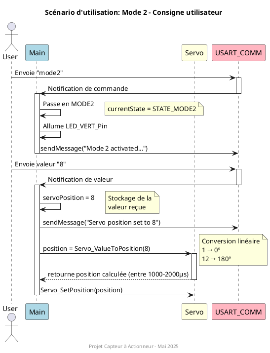
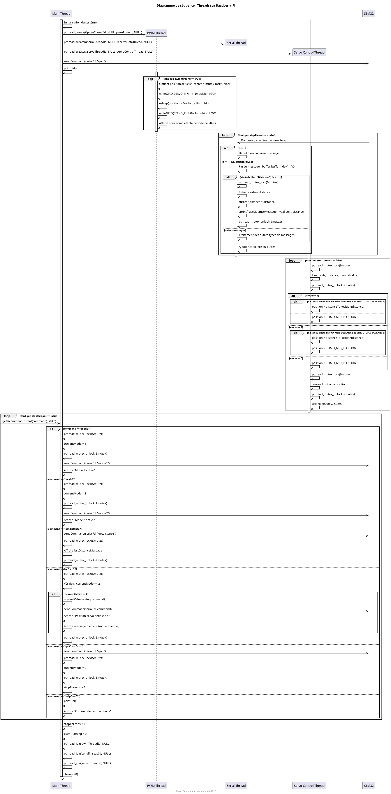

Système embarqué avec capteur ultrason et servo-moteur
Promotion E4e - SE
Mai 2025
Ce projet vise à développer un système embarqué sur microcontrôleur STM32F407 VGT permettant d'interfacer un capteur de distance à ultrasons (HC-SR04) avec un servo-moteur. L'objectif principal est de créer un système capable de réagir à l'environnement (mesure de distance) ou à des commandes utilisateur (via liaison série) pour positionner précisément un servo-moteur.
Le système met en œuvre différentes technologies et compétences en développement embarqué :
Le système propose trois modes de fonctionnement distincts :
Le système est géré par une machine à états dont les transitions sont déclenchées par les commandes utilisateur. Voici le diagramme d'états correspondant :

Ce diagramme montre les trois états principaux (IDLE, MODE1, MODE2), leurs transitions et les comportements associés à chaque état.
Ce diagramme illustre :
En plus des modes de fonctionnement principaux, le système offre les caractéristiques suivantes :
Le diagramme suivant illustre la structure du code et les relations entre les différents modules du système :

Ce diagramme présente l'organisation modulaire du système, montrant les classes principales et leurs relations.
Ce diagramme met en évidence :
Bien que ce diagramme se concentre principalement sur la partie STM32, le système sur Raspberry Pi adopte également une approche modulaire avec des modules distincts pour la communication série, le contrôle du servo-moteur, et la gestion des GPIO.
Les diagrammes de séquence suivants montrent les interactions entre les différents modules du système :

Vue d'ensemble des interactions dans le système avec références vers les diagrammes plus détaillés.
Ce diagramme montre :

Processus de réception et traitement des commandes utilisateur envoyées via l'interface série.
Il montre :

Comportement du système en fonction de son état actuel (IDLE, MODE1, MODE2).
Il montre :

Fonctionnement détaillé du Mode 1 où le servo-moteur suit la distance mesurée par le capteur.
Ce scénario montre :

Fonctionnement détaillé du Mode 2 où le servo-moteur suit les consignes de l'utilisateur.
Ce scénario montre :

Organisation des différents threads sur la Raspberry Pi et leurs interactions.
Ce diagramme illustre :
| Broche | Connexion | Description |
|---|---|---|
| VCC | Alimentation 5V | Alimentation du capteur |
| GND | Masse | Référence de masse |
| Trig | PA8 (GPIO) | Signal de déclenchement de la mesure (sortie STM32) |
| Echo | PA9 (GPIO) | Signal de retour de l'écho (entrée STM32) |
| Broche | Connexion | Description |
|---|---|---|
| VCC | Alimentation 5V | Alimentation du servo |
| GND | Masse | Référence de masse |
| Signal | PC6 (TIM3_CH1) | Signal PWM pour le contrôle de position |
| Broche | Connexion | Description |
|---|---|---|
| VCC | 5V (Pin 4) | Alimentation du servo |
| GND | GND (Pin 6) | Référence de masse |
| Signal | GPIO 18 (Pin 12) | Signal PWM pour le contrôle de position |
| LED | Broche | Mode associé | Signification |
|---|---|---|---|
| LED Bleue | PD15 | MODE1 | Mode capteur actif |
| LED Verte | PD12 | MODE2 | Mode commande série actif |
| LED Orange | PD13 | Indication | Mesure valide (5-25 cm) |
| LED Rouge | PD14 | Indication d'erreur | Mesure hors plage |
| Broche | Connexion | Description |
|---|---|---|
| TX | PA2 | Transmission de données |
| RX | PA3 | Réception de données |
| Appareil | Fonction | Broche | Connexion |
|---|---|---|---|
| STM32 | TX | PA2 | Connecté à RX Raspberry Pi |
| RX | PA3 | Connecté à TX Raspberry Pi | |
| Raspberry Pi | TX | GPIO 14 (Pin 8) | Connecté à RX STM32 |
| RX | GPIO 15 (Pin 10) | Connecté à TX STM32 | |
| Note: Les masses (GND) des deux systèmes sont connectées ensemble pour garantir une référence commune | |||
| Paramètre | Valeur | Description |
|---|---|---|
| Fréquence PWM | 50 Hz | Fréquence du signal de contrôle (période 20ms) |
| Position minimale | 1000 µs | Largeur d'impulsion pour 0° |
| Position centrale | 1500 µs | Largeur d'impulsion pour 90° |
| Position maximale | 2000 µs | Largeur d'impulsion pour 180° |
| Résolution | 1 µs | Résolution du positionnement |
| Paramètre | Valeur | Description |
|---|---|---|
| Durée trigger | 10 µs | Durée de l'impulsion de déclenchement |
| Plage de mesure | 5-25 cm | Plage de distance valide pour l'application |
| Timeout | 10 ms | Délai maximum d'attente pour l'écho |
| Timer utilisé | TIM1 | Timer haute résolution pour la mesure temporelle |
| Pull-down | Activé | Sur la broche Echo pour stabiliser le signal |
| Paramètre | Valeur | Description |
|---|---|---|
| Interface STM32 | USART2 | Interface série utilisée sur le STM32 |
| Interface Raspberry Pi | /dev/serial0 | Port série de la Raspberry Pi |
| Vitesse | 115200 bauds | Débit de transmission |
| Format de trame | 8N1 | 8 bits de données, pas de parité, 1 bit de stop |
| Délimiteurs | '<', '>' | Caractères d'encapsulation des messages |
| Timeout UART | 1000 ms | Timeout pour les opérations de transmission |
| Taille buffer | 256 octets | Taille des buffers de réception et transmission |
Le module HC-SR04 gère l'interfaçage avec le capteur ultrasonique pour mesurer la distance.
Le module servo-moteur permet de contrôler la position angulaire d'un servo standard via un signal PWM.
Le module UART gère la communication série avec l'utilisateur, offrant une interface formatée pour les commandes et les messages d'état.
| Type de message | Format | Exemple | Description |
|---|---|---|---|
| Commande mode | <commande> |
<mode1> |
Change le mode de fonctionnement |
| Valeur servo | <valeur> |
<8> |
Positionne le servo en Mode 2 |
| Information | <message> |
<Distance: 15.32 cm> |
Retour d'information |
| Erreur | <message d'erreur> |
<Error: Message too long> |
Indication d'une erreur |
Commandes reconnues :
mode1 : Active le Mode 1 (suivi par capteur)mode2 : Active le Mode 2 (commande manuelle)quit : Retourne au mode IDLE1 à 12 : Valeurs pour positionner le servo
en Mode 2
getdistance : Demande la dernière distance mesuréedemo : Lance une séquence de démonstrationPour valider le bon fonctionnement des différents modules, nous avons implémenté des fonctions de démonstration. Elles permettent de tester individuellement chaque composant (capteur HC-SR04, servo-moteur, UART) sans dépendre des autres parties du système.
Voici un résumé des fonctions de démonstration et des indicateurs de bon fonctionnement associés :
| Module | Fonction de démonstration | Indicateur de bon fonctionnement |
|---|---|---|
| Capteur HC-SR04 | HC_SR04_Demo |
Affichage de LED indicatives : • LED orange : distance valide (5-25 cm) • LED rouge : distance hors plage ou erreur |
| Servo-moteur | Servo_Demo |
Déplacement fluide entre les positions : • minimale (0°), • centrale (90°), • maximale (180°). |
| UART | USART_Demo |
Test interactif : • Envoi d'un message de test : "Testing USART communication... Please respond with <response> to continue." • Réception et validation de la réponse utilisateur : "Response received: continuing demo." |
L'application principale orchestre tous les modules et implémente la machine à états qui gère le comportement du système.
La Raspberry Pi est organisée en plusieurs modules qui travaillent ensemble pour offrir les fonctionnalités requises. Chaque module gère un aspect spécifique du système.
Ce module (fichiers gpio.c et gpio.h) gère l'accès aux broches GPIO de la Raspberry Pi en utilisant l'interface sysfs.
Fonctions importantes :
setupGPIO() : Configure la broche du servo-moteur en sortieexportGPIO() : Rend la broche accessible via l'interface sysfssetGPIODirection() : Définit si la broche est une entrée ou une sortiewriteGPIO() : Écrit une valeur sur la broche (0 ou 1)Ce module (fichiers serial.c et serial.h) gère la communication UART entre la Raspberry Pi et la STM32F4.
Fonctions importantes :
openSerialConnection() : Ouvre et configure le port sériesendCommand() : Envoie une commande formatée à la STM32receiveDataThread() : Thread dédié à la réception des donnéesLe module serial inclut un thread dédié qui s'exécute en arrière-plan et analyse en continu les données reçues de la STM32. Il extrait notamment les informations de distance mesurées par le capteur à ultrasons et les met à disposition des autres modules via des variables partagées protégées par mutex.
Ce module (fichiers servo.c et servo.h) gère le contrôle du servo-moteur connecté à la Raspberry Pi.
Fonctions importantes :
distanceToPosition() : Convertit une distance mesurée en position du servovalueToPosition() : Convertit une valeur utilisateur en position du servopwmThread() : Thread qui génère le signal PWMservoControlThread() : Thread qui contrôle le servo selon le mode actuelLe module servo utilise deux threads distincts :
Ce module (fichiers main.c et common.h) orchestre l'ensemble du système sur la Raspberry Pi.
Fonctions importantes :
main() : Point d'entrée du programmehandleUserInput() : Gère l'interface utilisateurprintHelp() : Affiche l'aide sur les commandes disponiblescleanup() : Libère les ressources et arrête proprement le systèmeLe fichier common.h définit les constantes partagées et les variables globales utilisées par tous les modules, notamment :
| Problème | Description | Solution mise en œuvre |
|---|---|---|
| Précision des mesures | Fluctuations importantes dans les mesures du capteur HC-SR04, rendant le positionnement du servo instable |
• Ajout d'un pull-down sur la broche Echo • Utilisation de TIM1 pour mesurer avec une résolution de 1µs • Implémentation de timeouts (10ms) • Filtrage des valeurs hors plage (5-25 cm) |
| Communication série bloquante | Les premières implémentations de la communication série bloquaient l'exécution principale |
• Réception non-bloquante des caractères • Gestion d'état pour reconstituer les commandes • Utilisation de délimiteurs '<' et '>' • Buffer statique pour conserver l'état entre appels |
| Stabilité du servo | Servo instable lors de petits changements de distance |
• Limitation de la fréquence de mise à jour (100ms) • Position centrale par défaut en cas d'erreur |
| Dysfonctionnement du servo-moteur | Après plusieurs essais, le servo-moteur a cessé de répondre correctement aux commandes |
• Test valide avec un autre servo-moteur • Vérification de la connexion électrique • Changement d'un fil de connexion |
| Communication STM32-Raspberry Pi | Difficultés lors de l'échange de données entre les deux plateformes |
• Utilisation d'un adaptateur de niveau logique • Mise en place d'un protocole robuste avec délimiteurs • Gestion d'erreurs et retransmission en cas d'échec • Ajout d'un petit délai (1ms) entre l'envoi de chaque caractère pour éviter la perte de données |
| Génération PWM Raspberry Pi | Difficultés à générer un signal PWM précis pour le servo sur Raspberry Pi |
• Implémentation d'un thread dédié au PWM • Utilisation de timers logiciels avec usleep() • Compensation des délais d'exécution • Calcul précis des temps d'attente pour maintenir une période constante de 20ms |
| Synchronisation multi-thread | Problèmes d'accès concurrent aux variables partagées entre les threads |
• Utilisation de mutex pour protéger les accès aux données partagées • Isolation des fonctions critiques • Optimisation des sections critiques pour minimiser les temps de verrouillage |
| Création de la machine à états | Implémentation de la logique de transition entre les différents modes |
• Conception claire des états et transitions • Documentation détaillée avec diagrammes • Tests systématiques des transitions |
| Configuration UART Raspberry Pi | Problèmes de configuration du port série sur la Raspberry Pi |
• Suppression du paramétrage VMIN et VTIME qui causait des blocages • Évitement du mode non-bloquant qui engendrait des pertes de données • Utilisation de tcflush() pour vider les buffers avant utilisation |
L'interaction entre la Raspberry Pi et le STM32 constitue un aspect essentiel de ce projet, permettant de créer un système distribué où chaque plateforme joue un rôle complémentaire.
Le système global suit une architecture maître-esclave où la Raspberry Pi agit comme maître et le STM32 comme esclave :
Cette architecture présente plusieurs avantages :
Dans ce système distribué, la Raspberry Pi remplit plusieurs rôles :
getdistance pour vérifier la dernière mesure ou le programme minicom.c pour tester la communication série.
L'application sur Raspberry Pi est développée en C et organisée en plusieurs modules fonctionnels :
| Module | Fichiers | Responsabilités |
|---|---|---|
| Principal | main.c, common.h |
|
| Communication série | serial.c, serial.h |
|
| Servo-moteur | servo.c, servo.h |
|
| GPIO | gpio.c, gpio.h |
|
| Utilitaires | test_uart.c, minicom.c |
|
Le système sur Raspberry Pi supporte les mêmes modes que le STM32, mais avec quelques particularités :
| Mode | Comportement STM32 | Comportement Raspberry Pi |
|---|---|---|
| Mode IDLE |
|
|
| Mode 1 |
|
|
| Mode 2 |
|
|
Cette configuration crée un système où, en Mode 2, les deux servo-moteurs adoptent des comportements différents : le servo du STM32 suit les commandes manuelles, tandis que le servo de la Raspberry Pi continue de suivre les mesures de distance.
La communication entre la Raspberry Pi et le STM32 utilise un protocole série simple mais robuste :
Types de messages échangés :
| Direction | Type de message | Exemple | Description |
|---|---|---|---|
| Raspberry Pi → STM32 | Commande de mode | <mode1> |
Change le mode de fonctionnement |
| Raspberry Pi → STM32 | Position servo | <8> |
Définit la position du servo STM32 (1-12) |
| Raspberry Pi → STM32 | Demande de distance | <getdistance> |
Demande la dernière mesure de distance |
| STM32 → Raspberry Pi | Mesure de distance | <Distance: 15.32 cm> |
Transmet une mesure de distance |
| STM32 → Raspberry Pi | Confirmation | <Mode 1 activated> |
Confirme une commande reçue |
| STM32 → Raspberry Pi | Erreur | <Error: Invalid command> |
Signale une erreur dans une commande |
Pour assurer une communication fiable, la fonction sendCommand() a été implémentée avec un mécanisme spécial : elle envoie chaque caractère individuellement avec un petit délai entre chaque envoi. Cette approche, bien que plus lente, évite les pertes de données qui peuvent survenir lorsque le buffer du récepteur est saturé.
void sendCommand(int fd, const char* command) {
if (fd < 0) return;
// Formater la commande
char formattedCommand[64];
snprintf(formattedCommand, sizeof(formattedCommand), "<%s>", command);
// Assurez-vous que chaque caractère est envoyé correctement
for (int i = 0; i < strlen(formattedCommand); i++) {
write(fd, &formattedCommand[i], 1);
// Petit délai entre chaque caractère
usleep(1000); // 1ms
}
printf("Commande envoyée: %s\n", command);
}Une des particularités de l'implémentation sur Raspberry Pi est l'utilisation de plusieurs threads pour gérer différentes tâches en parallèle :
Pour coordonner ces threads et éviter les problèmes d'accès concurrent, le programme utilise des mutex qui protègent les variables partagées comme le mode actuel, la distance mesurée ou la position du servo.
// Exemple d'utilisation de mutex pour protéger l'accès aux variables partagées
pthread_mutex_lock(&mutex);
int mode = currentMode;
float distance = currentDistance;
pthread_mutex_unlock(&mutex);
// Traitement avec les valeurs récupérées
if (mode == 1) {
// Utilisation des données en mode 1
} else if (mode == 2) {
// Utilisation des données en mode 2
}Cette architecture multi-thread permet au système de gérer plusieurs tâches simultanément, comme la génération précise du signal PWM pendant que les données série sont reçues et que l'utilisateur entre des commandes.
Pour faciliter le développement et le débogage du système, plusieurs outils de diagnostic ont été créés :
| Outil | Fichier | Objectif |
|---|---|---|
| Test UART | test_uart.c |
|
| Mini-terminal | minicom.c |
|
| Commande getdistance | Dans main.c |
|
Ces outils ont été particulièrement utiles pour identifier et résoudre les problèmes de communication entre la Raspberry Pi et le STM32, notamment les questions de timing, de formatage des messages et de configuration du port série.
// Extrait du programme minicom.c pour le diagnostic
printf("Envoi de puis affichage de toutes les réponses...\n");
// Envoyer mode1
const char *cmd = "\r\n";
write(fd, cmd, strlen(cmd));
tcdrain(fd);
// Lecture des réponses
printf("Réponses:\n");
// Mode non-bloquant
int flags = fcntl(fd, F_GETFL, 0);
fcntl(fd, F_SETFL, flags | O_NONBLOCK);
// Écouter pendant 5 secondes
time_t end_time = time(NULL) + 5;
char buffer[256] = {0};
int bufferIndex = 0;
int inMessage = 0;
while (time(NULL) < end_time) {
char c;
if (read(fd, &c, 1) > 0) {
// Afficher chaque caractère
printf("%c", (c >= 32 && c <= 126) ? c : '.');
// Construire des messages complets entre < et >
if (c == '<') {
inMessage = 1;
bufferIndex = 0;
buffer[0] = c;
bufferIndex++;
} else if (c == '>' && inMessage) {
buffer[bufferIndex] = c;
buffer[bufferIndex + 1] = '\0';
printf("\nMessage complet: %s\n", buffer);
inMessage = 0;
} else if (inMessage && bufferIndex < sizeof(buffer) - 2) {
buffer[bufferIndex] = c;
bufferIndex++;
}
fflush(stdout);
}
usleep(5000);
} Ce projet a permis de développer un système complet intégrant :
Plusieurs pistes d'amélioration pourraient être explorées :